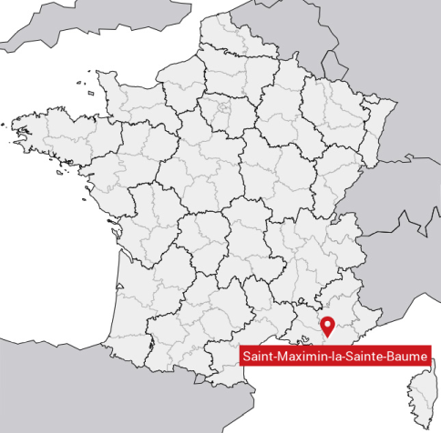
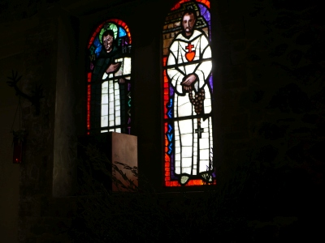 From Marseille I travelled a bit to the east to the place where I would spend Holy Week on retreat - Sainte-Baume. Upon entering the Dominican retreat house's chapel, whom should I see in stained glass but St. Charles de Foucauld, whose spirituality and life I seek to follow. He had a great love for Sainte-Baume, and visited several times. |
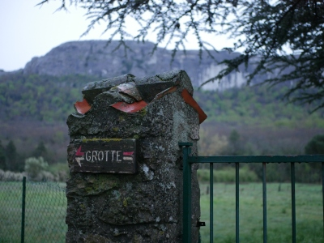 It's a vigorous hike to the grotto |
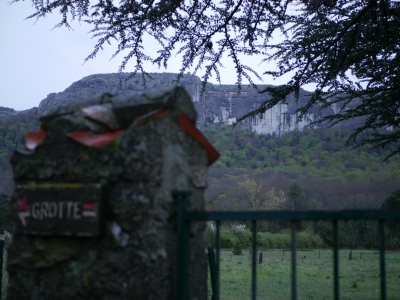
If you zoom in and look just above the trees, you can see the outer buildings of the grotto |
|---|---|---|
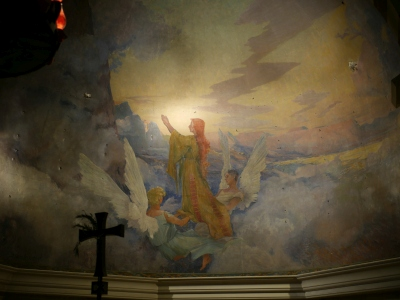
One of the paintings in the chapel - they were completed just before the nightmare of World War I. Again we see our recurring image of the angels lifting Mary Magdalene - here they are taking her to the top of Sainte-Baume for daily communion, a site I will visit later. |
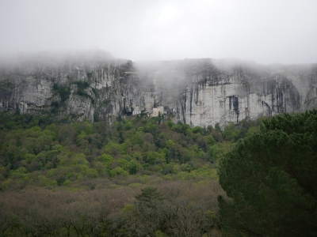
On the way up to the grotto |
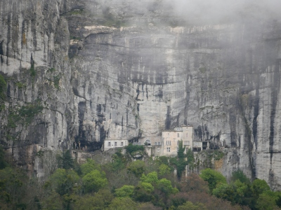
|
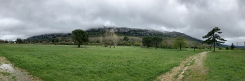 A panorama of the entire massif of Sainte-Baume |
Nearing the top, a reminder to keep silence out of respect and so that one can listen to the movements of God in one's heart and permit others to do the same. How noisy our world and our churches have become, and how difficult it can be to listen to God because of our infatuation with noise.
|
|
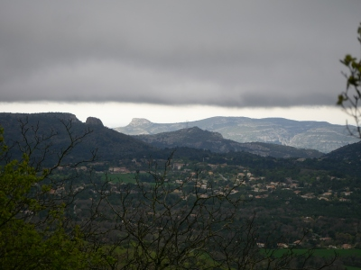 From the grotto location looking out over the surrounding country on a moody, gray day. |
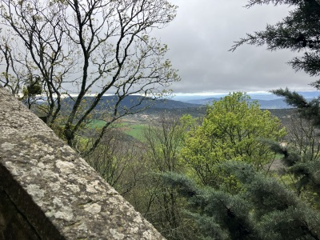 |
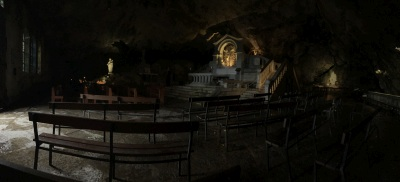 A panorama of the interior of her grotto/cave |
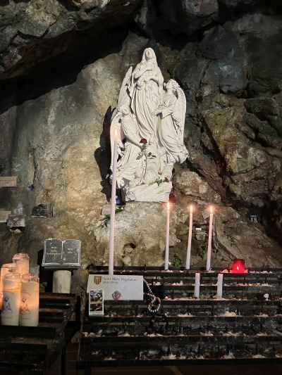 Praying with your intentions |
Behind the altar and to the left of the previous photo is a reliquary with St. Mary Magdalene's tibia and lock of hair |
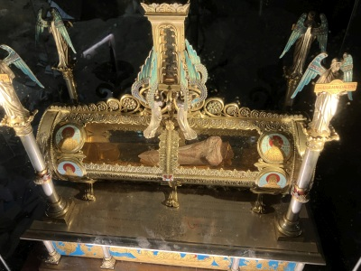
|
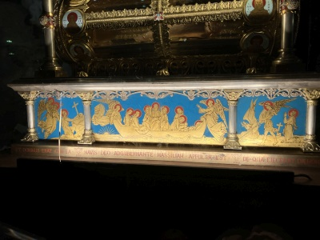 The cloisonne on the reliquary depicts her arrival by boat and penitential life |
Signs that followers of St. Charles de Foucauld have left in the grotto |
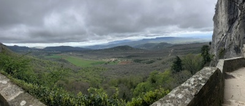 If you zoom in on this panorama, you can see the Dominican retreat center to the left of the brown field |
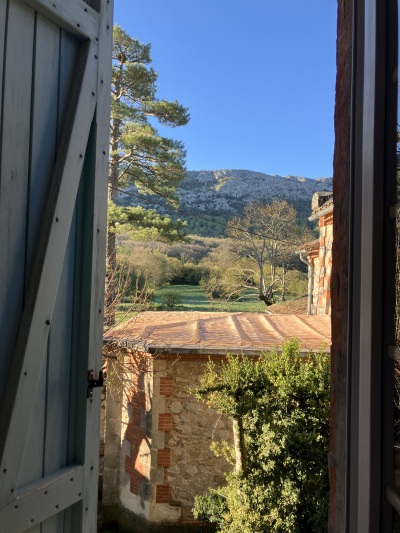 The view from my room |
The Dominicans leading a pilgrimage walk to the grotto for Mass. They have had responsibility over the site since the 1200s |
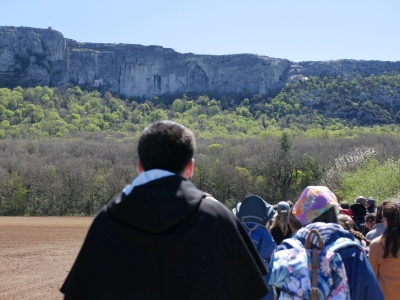
|
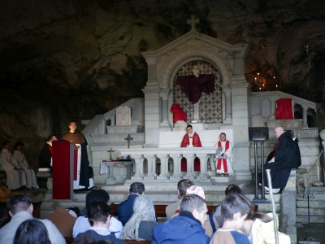 Mass in the grotto |
While hiking, I happened upon a cross and Sacred Heart, symbol of St. Charles de Foucauld |
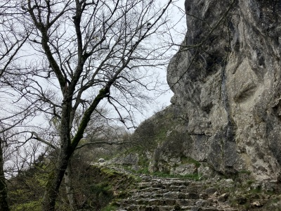 There is a precarious, arduous path that leads above the grotto to the very top of Sainte-Baume, the location of a small chapel in commemoration of where the angels would daily bring St. Mary Magdalene for Holy Communion. |
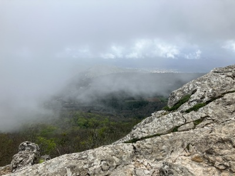
|
On top lie several piles of stones left by visitors; perhaps in commemoration of some intention or just to mark their presence |
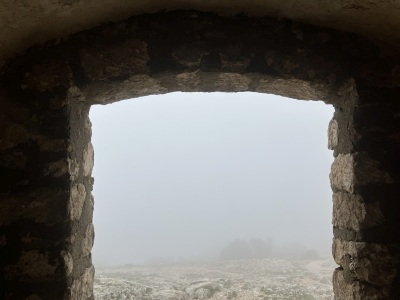 I hiked to the top on Holy Saturday. It was very windy and cloudy, with poor visibility. This is a view from inside the Chapel of Saint-Pilon. |
|
The fog seemed to pour down the mountain |
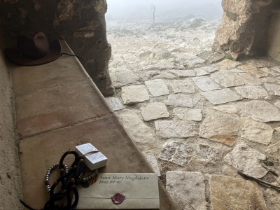 Your intentions inside the chapel... |
...and a selfie once safely down |
|
Easter Vigil fire |
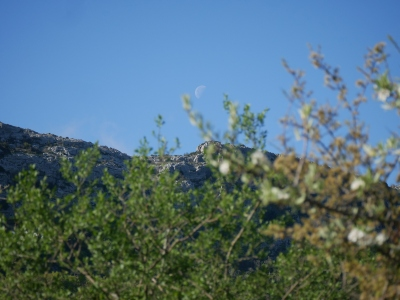 I hiked to the top again on Easter Sunday - a sunny, peaceful day in complete contrast to Holy Saturday |
Click the image above for a short devotional video I made on the contrast |
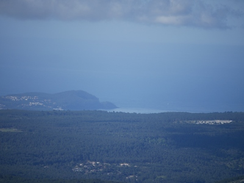 The Mediterranean Sea |
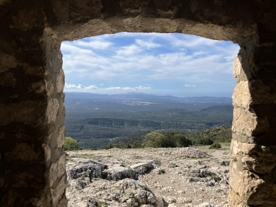 Another view from inside Saint-Pilon - quite a difference |
|
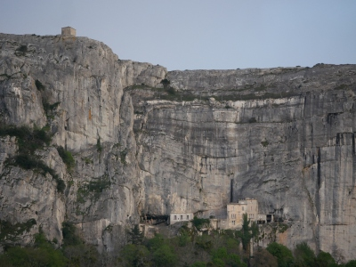 A view of both the grotto complex and Saint-Pilon Chapel |
Hand-painted Paschal candle of the "Noli Me Tangere" scene (John 20:17) |